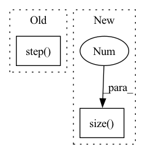

Pattern ID :40280
Before Change
def forward(self, g_s, f_s, g_t, f_t):
trans_loss_s, domain_acc_s = self._single_domain_forward(g_s, f_s, domain=1)
trans_loss_t, domain_acc_t = self._single_domain_forward(g_t, f_t, domain=0)
self.grl.step()
self.domain_discriminator_accuracy = 0.5 * (domain_acc_s + domain_acc_t)
return 0.5 * (trans_loss_s + trans_loss_t)
def _single_domain_forward(self, logits, features, domain=1):After Change
torch.zeros((g_t.size(0), 1)).to(g_t.device),
))
weight = 1.0 + torch.exp(-entropy(g))
batch_size = f.size(0 )
weight = weight / torch.sum(weight) * batch_size
self.domain_discriminator_accuracy = binary_accuracy(d, d_label)
return self.bce(d, d_label, weight.view_as(d))
In pattern: SUPERPATTERN
Frequency: 4
Non-data size: 2
Instances Fragment ID: 114228590
Project Name: thuml/transfer-learning-library
Commit Name: 8477111b23336e7dd2d349a4b35b969240ff5871
Time: 2020-04-12
Author: 13126830206@163.com
File Name: dalib/adaptation/cdan.py
M Class Name: ConditionalDomainAdversarialLoss
N Class Name: ConditionalDomainAdversarialLoss
M Method Name: forward(5)
N Method Name: forward(5)
M Parent Class: nn.Module
N Parent Class: nn.Module
M File Name: dalib/adaptation/cdan.py
N File Name: dalib/adaptation/cdan.py
M Start Line: 86
M End Line: 90
N Start Line: 87
N End Line: 100
Before Change
def forward(self, g_s, f_s, g_t, f_t):
trans_loss_s, domain_acc_s = self._single_domain_forward(g_s, f_s, domain=1)
trans_loss_t, domain_acc_t = self._single_domain_forward(g_t, f_t, domain=0)
self.grl.step()
self.domain_discriminator_accuracy = 0.5 * (domain_acc_s + domain_acc_t)
return 0.5 * (trans_loss_s + trans_loss_t)
def _single_domain_forward(self, logits, features, domain=1):After Change
h = self.grl(self.map(f, g))
d = self.domain_discriminator(h)
d_label = torch.cat((
torch.ones((g_s.size(0 ) , 1)).to(g_s.device),
torch.zeros((g_t.size(0), 1)).to(g_t.device),
))
weight = 1.0 + torch.exp(-entropy(g)) Fragment ID: 114228591
Project Name: thuml/transfer-learning-library
Commit Name: 6dfc8e293ca2cbc4d116dc8ed0a6ef176dff0d06
Time: 2020-04-12
Author: 13126830206@163.com
File Name: dalib/adaptation/cdan.py
M Class Name: ConditionalDomainAdversarialLoss
N Class Name: ConditionalDomainAdversarialLoss
M Method Name: forward(5)
N Method Name: forward(5)
M Parent Class: nn.Module
N Parent Class: nn.Module
M File Name: dalib/adaptation/cdan.py
N File Name: dalib/adaptation/cdan.py
M Start Line: 86
M End Line: 90
N Start Line: 87
N End Line: 100
Before Change
print(f"Epoch[{epoch + 1:05d}/{config.epochs:05d}]({index + 1:05d}/{batches:05d}) MSE loss: {loss.item():.6f}.")
// Update lr
scheduler.step()
def validate(model, valid_dataloader, criterion, epoch, writer) -> float:
// Calculate how many iterations there are under Epoch.After Change
// measure accuracy and record loss
psnr = 10. * torch.log10(1. / torch.mean((sr - hr) ** 2))
losses.update(loss.item(), lr.size(0 ) )
psnres.update(psnr.item(), lr.size(0))
// measure elapsed time Fragment ID: 114228586
Project Name: lornatang/espcn-pytorch
Commit Name: 3d7da32ace2da2b908bad2a32243b464f206e72a
Time: 2021-11-30
Author: liuchangyu1111@gmail.com
File Name: train.py
M Class Name: AnonimousClass
N Class Name: AnonimousClass
M Method Name: train(7)
N Method Name: train(8)
M Parent Class:
N Parent Class:
M File Name: train.py
N File Name: train.py
M Start Line: 83
M End Line: 117
N Start Line: 156
N End Line: 203
Before Change
loss = self.criterion(y_pred, y[i : i + self.batch_size])
self.optimizer.zero_grad()
loss.backward()
self.optimizer.step()
self.n_updates += 1
if epochs == self.local_epochs:
self.current_batch = 0After Change
batch_size = x.size(0) if not self.batch_size else self.batch_size
if self.local_epochs > 0:
for _ in range(self.local_epochs):
for i in range(0, x.size(0 ) , batch_size):
self._local_step(x[i : i + batch_size], y[i : i + batch_size])
else:
perm = torch.randperm(x.size(0)) Fragment ID: 114228594
Project Name: makgyver/gossipy
Commit Name: 7601b023e9ecd0604a37cf18afd67e14a2044939
Time: 2022-04-29
Author: mak1788@gmail.com
File Name: gossipy/model/handler.py
M Class Name: TorchModelHandler
N Class Name: TorchModelHandler
M Method Name: _update(2)
N Method Name: _update(2)
M Parent Class: ModelHandler
N Parent Class: ModelHandler
M File Name: gossipy/model/handler.py
N File Name: gossipy/model/handler.py
M Start Line: 136
M End Line: 153
N Start Line: 136
N End Line: 145